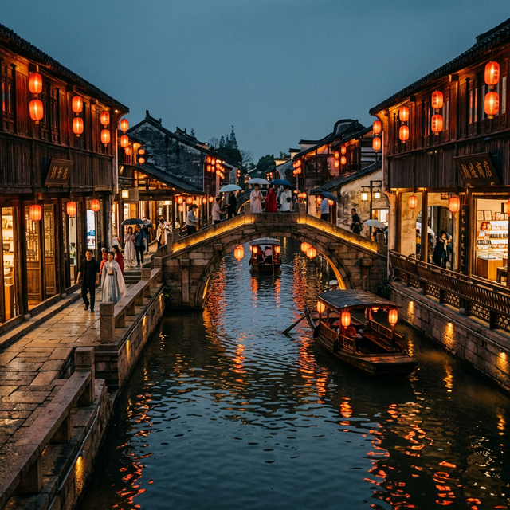
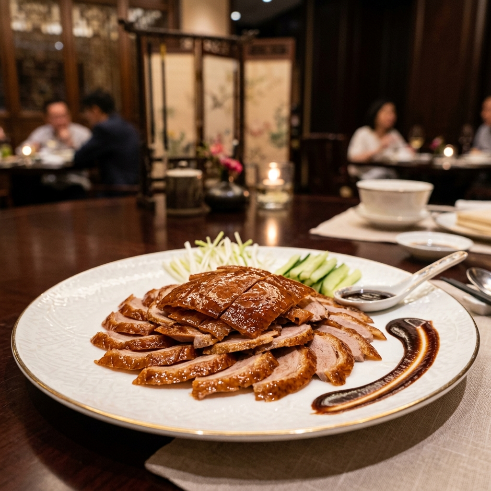
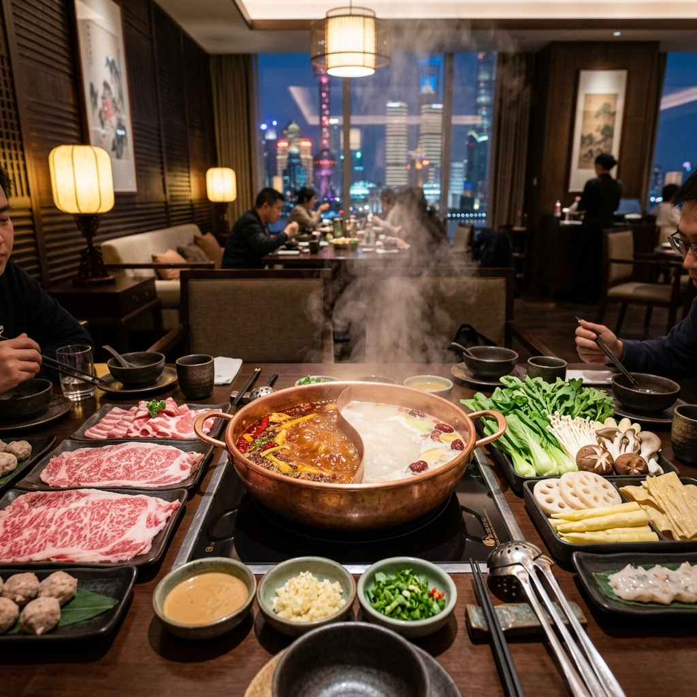
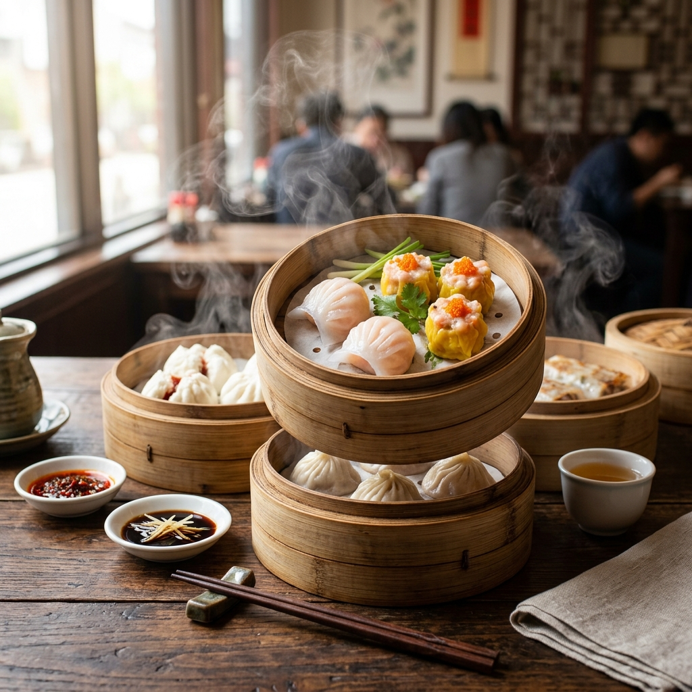

Khởi hành từ Sài Gòn — cuộn xuống để cùng bay qua Bắc Kinh huyền thoại, lướt tàu cao tốc về Hàng Châu, dạo bước Ô Trấn cổ kính, và chạm tay vào Thượng Hải hoa lệ.
北京 · Thủ đô ngàn năm văn hiến
Kinh đô huyền thoại nơi Vạn Lý Trường Thành uốn mình qua đỉnh núi, nơi Tử Cấm Thành lưu giữ bí mật ngàn năm của các triều đại hoàng gia.
杭州 · Thiên đường hạ giới
Nơi Tây Hồ phản chiếu ánh trăng vàng, nơi những truyền thuyết về Lương Sơn Bá – Chúc Anh Đài còn vang vọng trên mặt hồ phẳng lặng như gương.

乌镇 · Trấn cổ sống nước ngàn năm
Nơi thời gian dừng lại — những công trình gỗ chạm khắc soi bóng xuống mặt kênh, đèn lồng đỏ lung linh trong đêm, và cuộc sống vẫn mang hơi thở của hơn 1000 năm trước.
上海 · Hòn ngọc phương Đông
Thành phố hoa lệ nơi hiện đại gặp cổ điển — những cao ốc tỷ đô lấp lánh soi bóng xuống sông Hoàng Phố, trong khi ngôi chùa ngàn năm vẫn tĩnh lặng giữa lòng đô thị.

Món ăn hoàng gia với lớp da giòn rụm và hương vị đặc trưng.

Hương vị cay nồng, đậm đà, sưởi ấm tâm hồn giữa phố thị hoa lệ.

Những xửng hấp nóng hổi, gói trọn tinh hoa ẩm thực Trung Hoa.
VNGroup Tourist sẽ hỗ trợ quý khách từ A-Z. Thủ tục hiện nay đã đơn giản hóa rất nhiều, chỉ cần hộ chiếu và ảnh thẻ.
Mùa này thời tiết rất dễ chịu, thích hợp cho việc tham quan các cảnh điểm ngoài trời và dạo phố đêm.
Trung Quốc hiện dùng thanh toán điện tử rất nhiều. Quý khách chỉ cần đổi một lượng tiền mặt nhỏ, chúng tôi sẽ hướng dẫn cài đặt ứng dụng thanh toán.
Đoàn tập trung tại sân bay Tân Sơn Nhất, làm thủ tục chuyến bay đi Bắc Kinh. Đến nơi, xe và HDV đón đoàn về khách sạn nghỉ ngơi, bắt đầu hành trình khám phá thủ đô.
Chinh phục Vạn Lý Trường Thành kỳ vĩ. Buổi chiều tham quan Định Lăng — một trong 13 lăng mộ đời Minh. Thưởng thức đặc sản Vịt quay Bắc Kinh buổi tối.
Tham quan Tử Cấm Thành, Thiên An Môn. Sau đó lên tàu cao tốc hiện đại đi Hàng Châu. Ngắm nhìn phong cảnh Trung Hoa qua khung cửa sổ tàu siêu tốc.
Dạo thuyền Tây Hồ, thưởng thức trà Long Tỉnh. Di chuyển đến Ô Trấn — trấn cổ sông nước đẹp nhất vùng Giang Nam, ngắm đèn lồng lung linh về đêm.
Khám phá Ô Trấn buổi sáng yên bình. Di chuyển về Thượng Hải, tham quan Bến Thượng Hải, tháp Đông Phương Minh Châu và mua sắm tại phố Nam Kinh.
Tham quan Miếu Thành Hoàng, chùa Phật Ngọc. Tự do mua sắm trước khi xe đưa đoàn ra sân bay làm thủ tục chuyến bay về lại Việt Nam.
"Một chuyến đi tuyệt vời hơn mong đợi. Ô Trấn về đêm đẹp như một bức tranh thủy mặc, còn HDV thì cực kỳ am hiểu và nhiệt tình."
"Lần đầu tiên trải nghiệm tàu cao tốc 350km/h ở Trung Quốc, thật sự rất ấn tượng. Khách sạn và đồ ăn đều ở mức xuất sắc."
Cam kết hoàn thành mọi dịch vụ với tinh thần trách nhiệm và sự tận tâm tuyệt đối (Responsibility).
Hỗ trợ 24/7 qua Hotline: 0931 867 376. Chúng tôi luôn đồng hành cùng bạn (Unity & Sincerity).
Xây dựng giá trị thật và sự tin tưởng tuyệt đối với mọi khách hàng (Trust & Transformation).
6 ngày 5 đêm qua 4 thành phố — từ cổ kính đến hiện đại, từ núi cao đến mặt hồ. Đặt ngay để nhận ưu đãi tốt nhất!